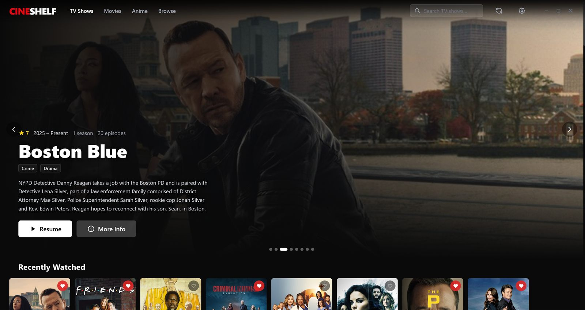
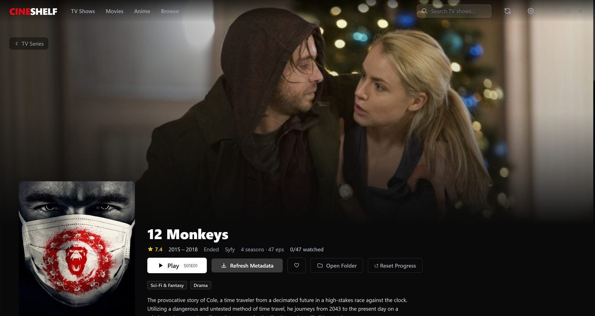
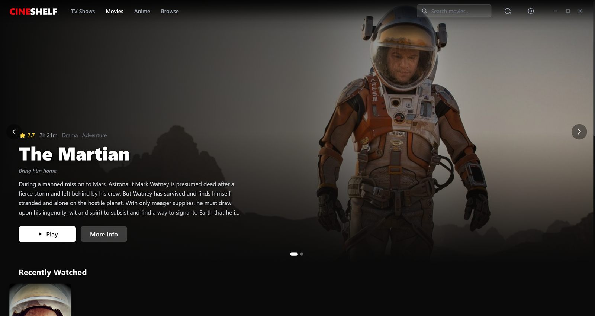
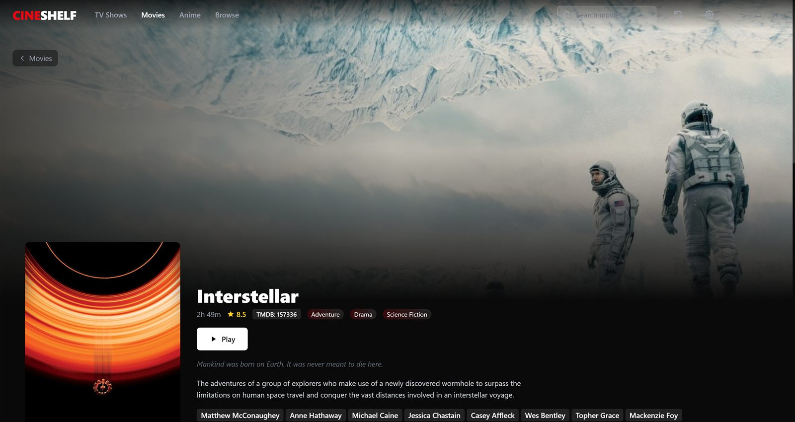
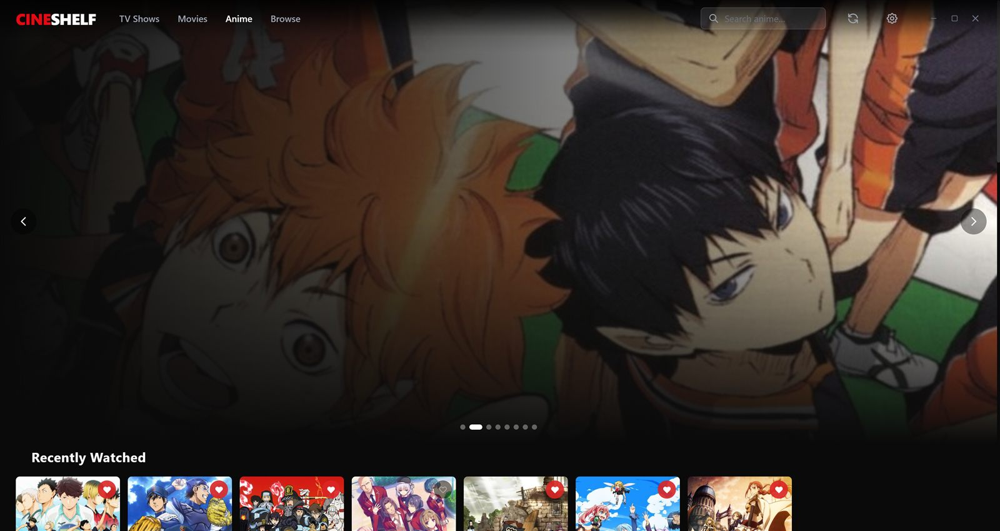
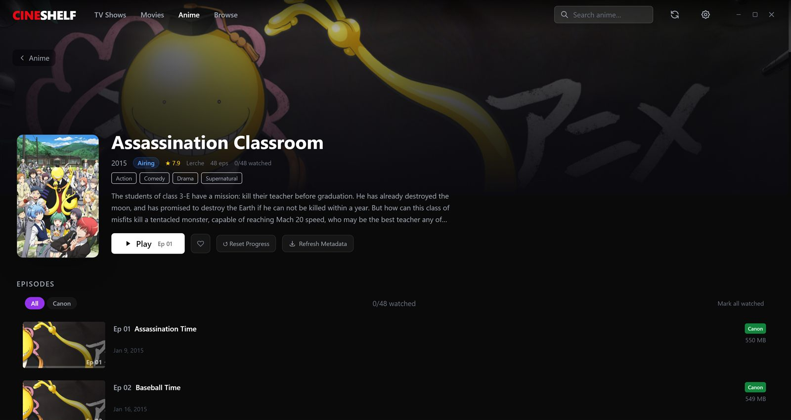
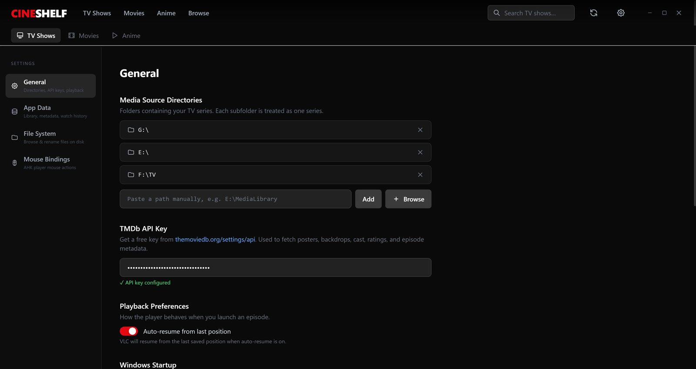
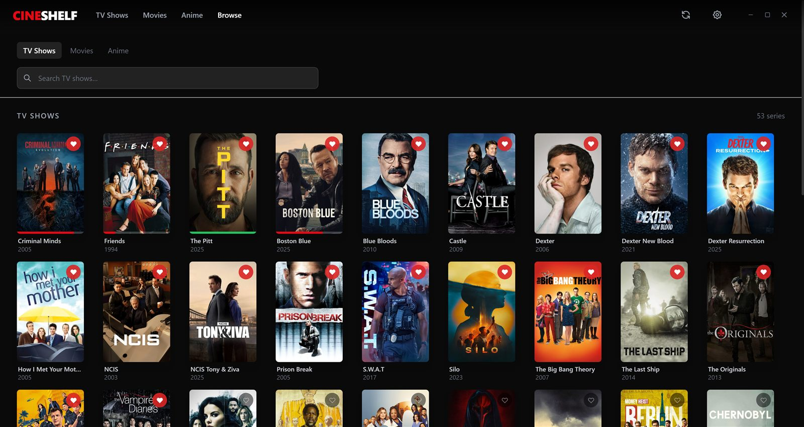

A local, personal media library with a Netflix-style UI — TV Shows, Movies, and Anime, played through VLC with a fully custom on-screen overlay. No cloud, no subscription, no server: just your own files, organized and watched properly.
Real screenshots from a real running session against a populated library — not mockups.








Streaming apps are great until the thing you actually own isn't on any of them. CineShelf exists to make a personal, already-organized media collection feel as good to browse and resume as any streaming service — without giving up ownership, paying a subscription, or trusting a server with a library that already lives on disk.
TV Shows, Movies, and Anime are deliberately separate workflows — each with its own scanner, metadata source, and UI — so improving one never risks the others.
No bundled video player. CineShelf launches your installed VLC and drives it over HTTP, drawing a custom transparent overlay on top for every control.
TMDB / TVMaze for TV & Movies, AniList → Jikan → TMDB for Anime. Fetched once, cached to disk, fully usable offline after that.
Per-episode position tracking, a 90%-complete threshold, auto-resume, and a series-completion counter.
Absolute episode numbering, OVA/special detection, and canon/filler/mixed filtering that drives the actual playback playlist.
Unplug an external drive and its titles grey out instead of vanishing — nothing is lost from the library.